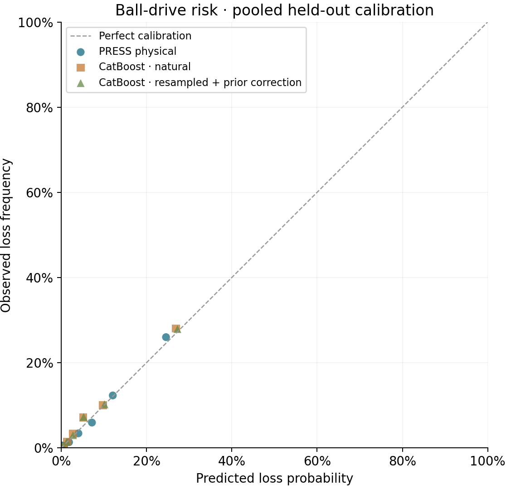
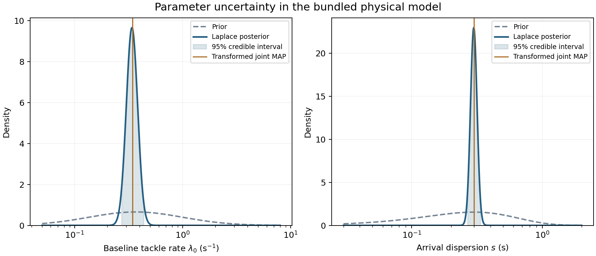

Ball-drive risk benchmark
Model and example · All benchmarks
This benchmark documents the selection, estimation, and predictive evaluation of the PRESS ball-drive risk model. The target is the loss of individual possession within a canonical one-second carry, conditional on carrying. The model vignette defines the player-motion approximation, probabilistic defender reachability, tackle intensity, and competing-risk equations. Here we focus on the evidence supporting the fitted specification.
1. Evaluation cohort
The final cohort comprises 9,114 carry attempts, including 456 losses (5.003%), from ten SkillCorner matches. The one-second segmentation of individual possessions is described in Possession segmentation and context. For this specific task, loss-ending possessions without an associated on-ball engagement (OBE) are excluded, since such losses are not guaranteed to result from defensive pressure. The OBE is used only to verify outcomes, and successful-ending possessions do not require one.
Only the final failed section of a possession is labelled as a loss. A loss observed before one second still contributes the one-second failure probability, \(1-S(1)\); a successful canonical second contributes \(S(1)\). The fit uses only the binary outcome of the canonical second. Individual possession loss can include out-of-play events without a team turnover; failed passes are excluded from this task.
The shared evaluation procedure described in Benchmarks defines the five outer match folds, the nested 6+2 validation rotations, pooled held-out evaluation, and performance metrics. For Ball-drive risk, the four inner rotations select the spline smoothing specification using the six fitting and two validation matches. The task-specific null model predicts the loss prevalence estimated from the eight development matches of each outer fold. The final physical model is fitted without resampling or post-hoc calibration.
2. Model specification and features
The evaluated model is the reachability-gated competing-risk specification with an additive spline tackle intensity,
\[ \log\lambda_i(t)=\alpha+g_v(\lVert v_{\mathrm{bc}}\rVert)+g_B(B(t))+g_\phi(\phi_i(t)),\qquad \alpha=\log\lambda_0. \]
The terms describe carrier speed, signed distance to the pitch boundary, and defender approach angle, respectively. Restricted cubic spline bases allow nonlinear effects while retaining the common possession-survival process. The model vignette documents the kinematic conventions, the form of the spline functions, reachability functions, complexity allocation, priors, and competing-risk equations. The construction of the bases is in the appendix on the spline basis.
Every fit is a maximum a posteriori (MAP) estimate under the priors defined in the model vignette: standard normal priors on the linear parameters \(\alpha\), \(\beta_v\), \(\beta_B\) and \(\beta_\phi\), and a Gamma prior on the arrival dispersion \(s\) with shape 2.5 and rate 5 (mean 0.5 s). The nonlinear spline coefficients are regularized by a curvature penalty, equivalent to a zero-centred Gaussian prior, whose multipliers are selected as described below.
3. Model selection and validation
Optimization
Every MAP fit in this study follows the same procedure: the fits of the nested validation, the refits on the eight development matches, and the final fit on all ten matches. The negative log-posterior is minimized with L-BFGS-B, using gradients from automatic differentiation. Before optimizing, the objective is evaluated, without moving them, at 33 initial points: one preset point and 32 random points drawn from the prior. The optimization starts from the point with the lowest objective, and if that point differs from the preset one, the optimization is also run from the preset point. Among the converged solutions, the one with the lowest final objective is retained. The preset point has \(\lambda_0=0.4\) s\(^{-1}\), \(s=0.4\) s, \(\beta_v=0.1\) and \(\beta_B=-0.02\), with all nonlinear coefficients and the linear coefficient of the angle set to zero. This set of values is a practical starting point, consistent with preliminary explorations using a log-linear model that includes only the ball-carrier block. Initialization uses only the fitting data of each fit.
Regularization grid and selection
Write \(\rho_{\mathrm{bc}}\) for the shared nonlinear smoothing multiplier of the ball-carrier block (speed and boundary), and \(\rho_\phi\) for the multiplier of the engagement block (approach angle). The smoothing strengths were explored in an exploratory run over three values of different scale for each block, designed to contain the computational cost of nested cross-validation. Tuning speed and boundary separately would require nine combinations instead of three for each angle specification, so the carrier block shares one multiplier. The knot counts, the additive structure and the linear-coefficient priors are fixed, and validation selects the smoothing strengths and whether the angle is included.
| Component | Candidate specifications |
|---|---|
| Speed and boundary together | Linear terms only; or splines with \(\rho_{\mathrm{bc}}\in\{0.01,1,100\}\) |
| Approach angle | Absent; or linear-plus-spline effect with \(\rho_\phi\in\{0.01,1,100\}\) |
The three smoothing strengths, 0.01, 1 and 100, span four orders of magnitude and cover weak, intermediate and strong curvature regularization. The Cartesian product contains 16 configurations (four choices for speed and boundary times four for the angle). When angle is present, its linear coefficient keeps its prior, and \(\rho_\phi\) penalizes only its two nonlinear coefficients. Exact candidate grid and priority order.
The selection is carried out separately in each of the five outer folds, using only the eight development matches of that fold.
- Inner splits. The eight development matches are divided into four rotating 6 + 2 splits: in each split, six matches fit the model and two matches validate it, and every development match is a validation match exactly once.
- Fitting. Each of the 16 configurations is fitted on the six fitting matches of each split. Knot locations and basis transformations are estimated on those matches and reused unchanged on the validation matches, and each MAP fit follows the optimization procedure above and runs to numerical optimizer convergence.
- Scoring. Each configuration is scored by cross-entropy on the two validation matches of its split, which gives a cross-entropy for every development match.
- Reference candidate. The candidate with the lowest observation-weighted cross-entropy across the eight validation matches is the reference.
- Paired comparison. For each candidate \(c\) and validation match \(m\), let \(\Delta_m=\mathrm{CE}_{c,m}-\mathrm{CE}_{\mathrm{best},m}\), and let \(\bar\Delta_c\) be the observation-weighted mean difference. Its standard error is estimated by deleting one validation match at a time (match jackknife). A candidate is eligible when \(\bar\Delta_c\leq\mathrm{SE}_{\mathrm{jackknife}}(\bar\Delta_c)\).
- Choice by priority. Among the eligible candidates, the first in a prespecified priority order is selected: angle-absent configurations first, followed by angle multipliers 100, 1 and 0.01; within each group, linear main effects precede spline multipliers 100, 1 and 0.01. The order favours simpler and smoother configurations when their validation disadvantage is small relative to the uncertainty between matches. A more flexible configuration is therefore selected only when its reduction in cross-entropy exceeds the uncertainty between matches.
- Refit and test. The selected configuration is refitted on all eight development matches and evaluated on the two held-out test matches.
The choice was identical across all five outer folds, and the selected configuration includes the approach angle: multipliers 1 for speed and boundary and 100 for approach angle. Fold selection details.
| Spline effect | Fixed basis | Selected nonlinear penalty multiplier |
|---|---|---|
| Carrier speed, \(g_v\) | Restricted cubic spline, 5 knots | 1 |
| Signed boundary distance, \(g_B\) | Restricted cubic spline, 5 knots | 1 |
| Defender approach angle, \(g_\phi\) | Restricted cubic spline, 4 knots | 100 |
4. Predictive performance
Following the shared outer-fold protocol, the final spline specification was refitted on the eight development matches and evaluated on the two held-out matches. Pooled results for the verified-loss cohort are:
| Metric | Final spline model |
|---|---|
| Observations / losses | 9,114 / 456 |
| Cross-entropy | 0.143483 |
| Null cross-entropy | 0.198722 |
| Gain over null | 27.798% |
| ECE | 0.475% |
| Brier score | 0.040068 |
| ROC AUC | 0.88547 |
| Loss-class PR AUC | 0.30837 |
| Mean predicted / observed loss | 5.059% / 5.003% |
Final metrics, fold parameters, and audit provenance.
5. Comparison with published results
Published results provide context. The studies differ in sample size, loss definitions, input representations, train/test splits and prevalence, and the gain over each study’s null is reported for orientation.
| Study / model | Training loss share | CE | Null CE | Gain over null | ECE |
|---|---|---|---|---|---|
| Fernández et al.; neural network | 9.4% overall | 0.2803 | ≈0.311696* | ≈10.07%* | 0.51% |
| Stalpaert; CatBoost start-only, natural | 6.1% table heading | 0.2059 | 0.2455 | 16.13% | — |
| Stalpaert; CatBoost start-only, resampled | 10% training only | 0.1053 | 0.2455 | 57.11% | 1.64% |
| PRESS; final physical spline | 5.00% pooled | 0.143483 | 0.198722 | 27.80% | 0.475% |
*For Fernández et al., the approximate null uses entropy at the published overall success rate (90.6%) (Fernandez, Bornn, and Cervone 2021). Stalpaert’s published results use a different drive-labelling convention, marking the last two seconds of failed drives as unsuccessful, whereas PRESS labels only the terminal section (Stalpaert 2022). Literature comparison details.
CatBoost with training-set resampling
In (Stalpaert 2022) a CatBoost architecture is adopted to model ball-drive risk, providing a substantial improvement when the training set is resampled (table above). We tested the same approach on our data by training CatBoost on the same 9,114 sections and 456 losses used to evaluate the final physical model. Its 50 snapshot-derived features cover carrier speed, boundary geometry, defender times to interception, encounter probabilities, and local spatial relationships, broadly overlapping the information used in (Stalpaert 2022), although not reproducing every feature transformation or convention. The feature representation comprises the following 50 inputs, all derived from the initial tracking snapshot and the carrier’s projected constant-velocity path:
| Feature block | Count | Definition |
|---|---|---|
| Carrier speed | 1 | Initial speed magnitude from the centred seven-frame tracking estimate |
| Boundary distance | 3 | Signed minimum distance to the four pitch lines at 0, 0.5 and 1 s |
| Defender time to interception (TTI) | 9 | Three smallest TTIs, independently ranked at 0, 0.5 and 1 s |
| Encounter probability curve | 11 | All-defender encounter probability at 0, 0.1, …, 1 s |
| Carrier and goal geometry | 8 | Initial/projected x/y, distance and bearing to the opponent goal centre |
| Three nearest defenders | 15 | Initial distance, defender speed, relative closing speed, transverse relative speed and front/back position cosine for each fixed defender identity |
| Local geometry | 3 | Defender counts within 2 and 5 m, and position-angle cosine between the nearest two defenders |
| Total | 50 |
For relative defender position \(r=x_D-x_{\mathrm{bc}}\), unit direction \(n=r/\|r\|\) and relative velocity \(w=v_D-v_{\mathrm{bc}}\), closing speed is \(-n\cdot w\) and transverse speed is \(\sqrt{\|w\|^2-(n\cdot w)^2}\). The front/back cosine compares defender relative position with carrier velocity; it is undefined for carrier speeds below 1 m/s. CatBoost handles missing values. Observed future positions, outcomes, engagement annotations, durations, receiver identities and player/team identities are excluded from the features.
TTI uses \(v_{\max}=7\) m/s and linear and turning accelerations of \(7\) m/s\(^2\), retaining initial speeds above the cap and using the model’s fixed-position turning convention without a reaction delay. The encounter curve is \(E(t)=1-\prod_i[1-F_i(t)]\), where \(F_i(t)\) is the logistic defender-reachability probability (Bekkers 2025). The dispersion \(s\) is taken from the corresponding physical training fit for each inner or outer fold. Thus the same fold separation is respected in both sampling arms.
Resampling was applied only within training subsets, retaining all losses and sampling nine successful sections per loss; validation and test data preserved their natural prevalence. The resampled model’s probabilities were adjusted for the known change in class prevalence.
The CatBoost comparison follows the rotating design of the physical model tasks. In each outer fold, four 6+2 rotations evaluate 36 configurations (depth 4/6/8, learning rate 0.02/0.05/0.10 and L2 1/3/10/30) and tree prefixes every 25 trees up to 3,000. Selection minimizes pooled inner-validation CE, applying the analytical prevalence correction in the resampling arm. Models are trained to the fixed search ceiling and scored at saved prefixes.
After selecting configuration and tree count, the selected model is refitted on all eight development matches before outer testing. Predictions are averaged over three seeds (19, 41 and 73). The displayed natural and resampled results use native and analytically corrected probabilities, respectively.
| CatBoost training | Pooled CE | Gain over null | ECE |
|---|---|---|---|
| Natural prevalence | 0.139855 | 29.623% | 0.490% |
| 10% losses, prior-corrected | 0.139928 | 29.586% | 0.397% |
In our experiment, resampling yielded no meaningful change in held-out cross-entropy, and CatBoost performs close to the physical model, so we do not observe the same benefit. A possible explanation is the scale of the dataset, although we have no evidence that it is the only reason. The physical likelihood model is maintained as the deployed one. Full hyperparameter settings, feature definitions, and common-floor sensitivity remain available in the experiment metrics, selected parameters, and audit provenance.

The physical model’s pooled calibration curve is close to the diagonal. In the highest predicted-risk decile, mean predicted loss is 24.6%, compared with 26.0% observed. ECE is 0.475%, which summarizes marginal calibration across the ten bins. Physical-model calibration bins, CatBoost calibration bins, pooled calibration metrics, and vector figure.

6. Production model and parameter uncertainty
The selected specification was fitted to all ten matches and all 9,114 verified sections. Following the shared deployment protocol, this fit supplies the package parameters.
The likelihood is Bernoulli on the one-second loss outcome, and the coefficients, baseline tackle rate, and logistic arrival-time dispersion are estimated jointly by maximum a posteriori (MAP) under the priors defined in the model vignette. A local Laplace approximation to the joint posterior supplies approximate marginal uncertainty. In the final fit, the preset initial point had the lowest initial objective, so a single optimization was run. In log coordinates, the reported approximations are
\[ \log\lambda_0\mid D\ \dot\sim\ \mathcal N(-1.065479,\,0.014572626), \qquad \log s\mid D\ \dot\sim\ \mathcal N(-1.205201,\,0.003378886), \]
where the second argument denotes variance. The resulting summaries are:
| Parameter | Joint MAP | Approximate posterior mean | 95% credible interval |
|---|---|---|---|
| Arrival dispersion \(s\) | 0.299632 s | 0.300139 s | 0.267368–0.335789 s |
| Baseline tackle rate \(\lambda_0\) | 0.344563 s\(^{-1}\) | 0.347082 s\(^{-1}\) | 0.271965–0.436539 s\(^{-1}\) |
The approximate credible intervals use \(\exp\{\hat m\pm1.96\sqrt{\Sigma_{kk}}\}\), and the approximate posterior means use \(\exp(\hat m+\Sigma_{kk}/2)\). The baseline rate is an intercept-scale intensity. Package predictions use the joint MAP parameters.

These intervals describe uncertainty conditional on the model, movement assumptions, prior strengths, and training data, and exclude model-selection uncertainty and systematic annotation error. The final fit converged, with a valid Laplace approximation. Posterior summaries and refit provenance.
7. Discussion and limitations
The spline model achieves strong held-out discrimination and good pooled calibration while retaining an explicit interpretation in terms of defender reachability and tackle intensity. On the same observations, CatBoost trained at natural prevalence reaches a slightly lower cross-entropy (0.139855 against 0.143483). The physical model remains close to it while providing defender-level rates and reachability, which the composed hazard uses.
The scope of the model is described in the model vignette, which also includes executable real-match examples.
8. Supplementary resources
The final physical metrics, fold parameter estimates, regularization selection, CatBoost comparison, posterior summaries and production provenance support the reported results. The research pipeline provides the procedural source and input/output layout.